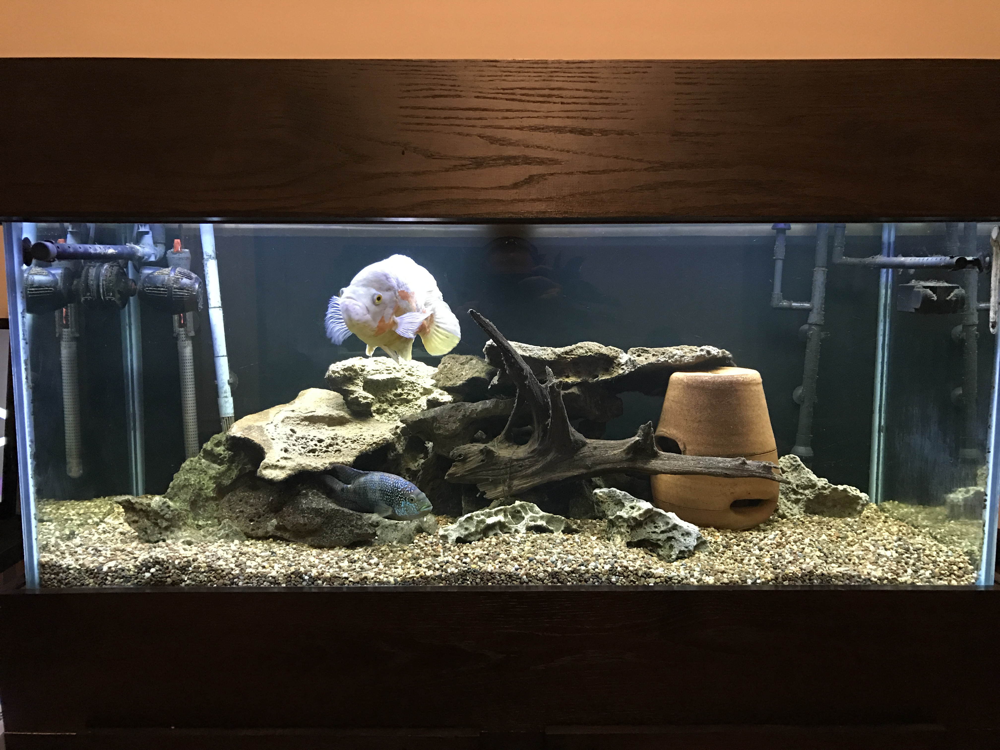
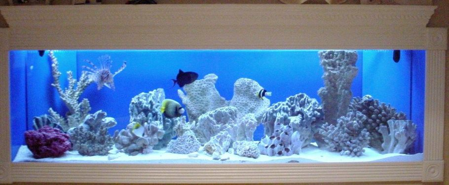
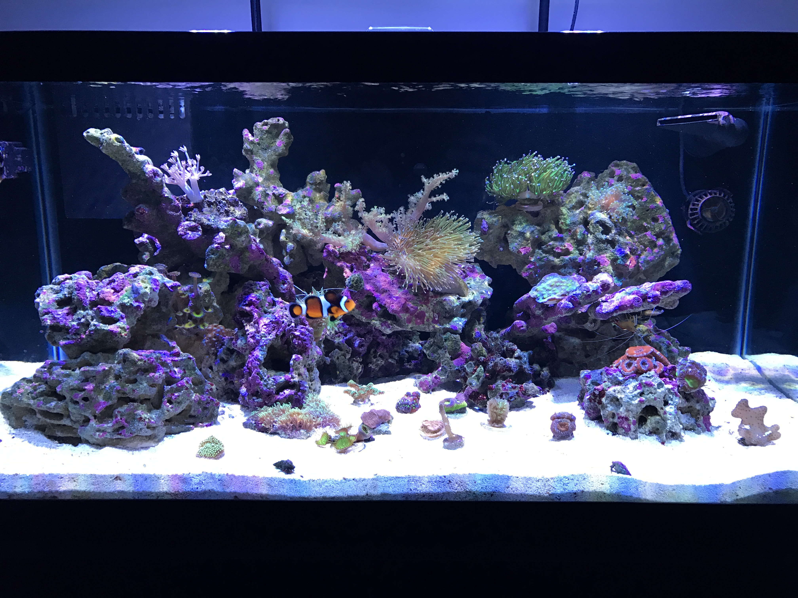

The Awesome Hobby of Aquarium Keeping
The aquatic world is one of mystery, wonder, and great beauty. Keeping an aquarium in your home is a fantastic way to bring a piece of our planet's oceanic and freshwater habitats into your life, and put mother nature's beauty and splendor on display. Aquariums can come in all shapes and sizes and house many different specimens and ecosystems. Below is a brief guide on some of the most popular types of aquariums to help you decide which might be the best fit in your home. Enjoy!
Freshwater
The most beginner friendly and generally least expensive type of tank is a freshwater setup. Many species fall into this category, such as goldfish, bettas, tetras, guppies, cichlids, and catfish. Fish for freshwater setups tend to be less expensive, more tolerant of fluctuations in water quality, and less demanding in terms of food preferences and required equipment for the aquarium.
Saltwater
A lot of people choose to master the keeping of a freshwater tank before venturing into the world of saltwater. While that definitely does not hurt, even beginners can find great success with a saltwater aquarium. Popular saltwater fish include the clownfish, lionfish, pufferfish, damsels, gobies, and eels. Though the additional water parameter of salinity must be maintained and saltwater fish tend to be a bit more sensitive and finicky, there are plenty of colorful and beginner-friendly livestock options available for the new hobbyist.
Living Coral Reef
A lot of hobbyists want to take their aquariums to another level. Regarded by many as the pinnacle of the hobby, the reef aquarium brings a slice of the ocean into your living room with your own personal coral reef habitat. While this type of aquarium offers great beauty and color, it tends to be the most difficult and expensive to maintain. Adding living corals to an aquarium brings multiple new water parameters to monitor and maintain, and coral species often have very specific lighting and water flow requirements that must be achieved for success.
If you think you're up for the challenge, the reef aquarium can be a very rewarding experience. A strict maintenance schedule is a must, but the outcome is well worth it!
Maintenance Tips
A good maintenance schedule is the key to a successful and long-running aquarium. This web page has some great information on basic tank maintenance, and offers some excellent advice to set you up for success. I think it does a good job of keeping instructions simple and clear, and I like that it breaks maintenance suggestions down by things to do daily, weekly, etc.
As far as layout and appearance, it is very attractive and draws the reader in by keeping colors simple and appealing, and breaking down the information in a way that flows very well. On the top of the page's source code I see some elements indicating style and script, indicating to me that this portion of the page involves modifying the page's colors and appearance, and may also run some sort of javascript code that I intend to learn more about in the coming weeks.
Presented below are some good targets to shoot for regarding water parameters for the different types of aquariums discussed on this page:
| Aquarium Type | Temperature* | Salinity (SG) | Nitrate | Phosphate | Calcium | Alkalinity |
|---|---|---|---|---|---|---|
| Freshwater | 70-85F | N/A | 0-40 ppm | 0-1 ppm | Not Applicable | |
| Saltwater | 1.017-1.018 | |||||
| Living Reef | 77-78F | 1.025-1.026 | < 5 ppm | < .5 ppm | 420-450 ppm | 8.2-8.7 |
* Water temperature is more dependent upon the type of livestock you have chosen to keep, though reef tanks should almost always be maintained at 77-78F.
Pull the Trigger!
So what's stopping you from setting up your very own aquarium today? Keeping an aquarium is:
- A beautiful and unique piece of art for your home.
- Not just another pet. It is your own piece of mother nature that you are the creator and master of.
- An excellent conversation piece that guests will be enamored with and impressed by.
- A great way to get rid of all your pesky excess (or not) cash!
It's true, the aquarium hobby can be an expensive one. If after all this you still aren't convinced that an aquarium is in your future, I am happy to suggest another much cheaper hobby. In any case, thanks for reading!
Pick me!!!